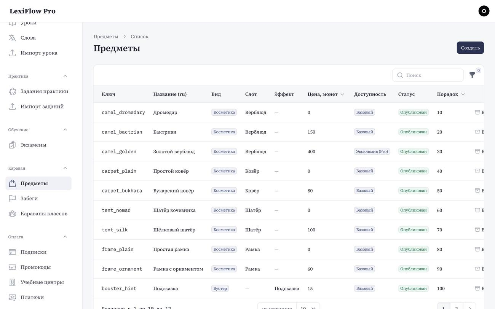
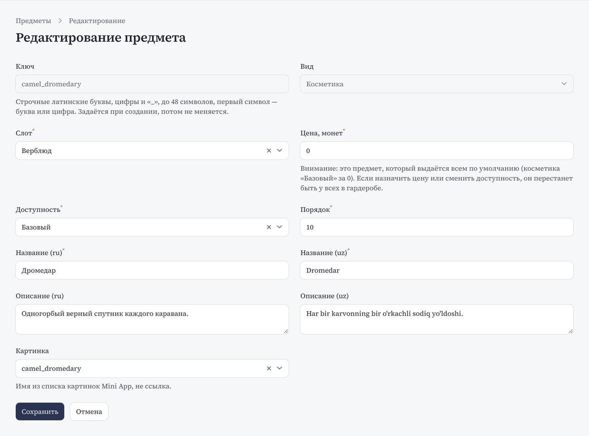
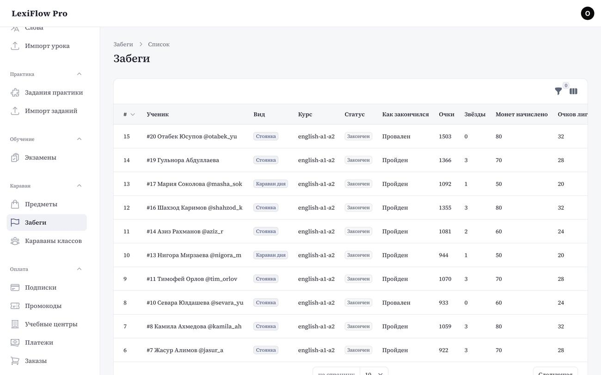
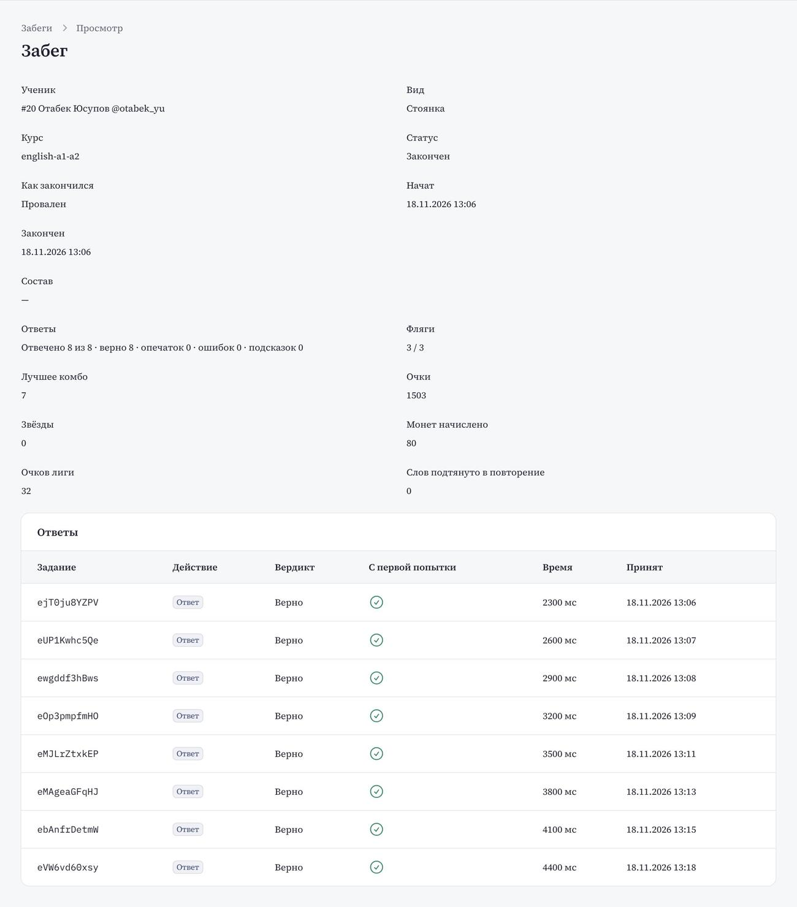
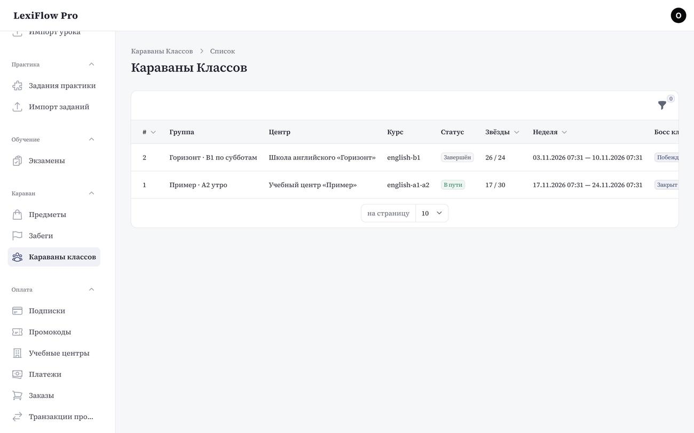
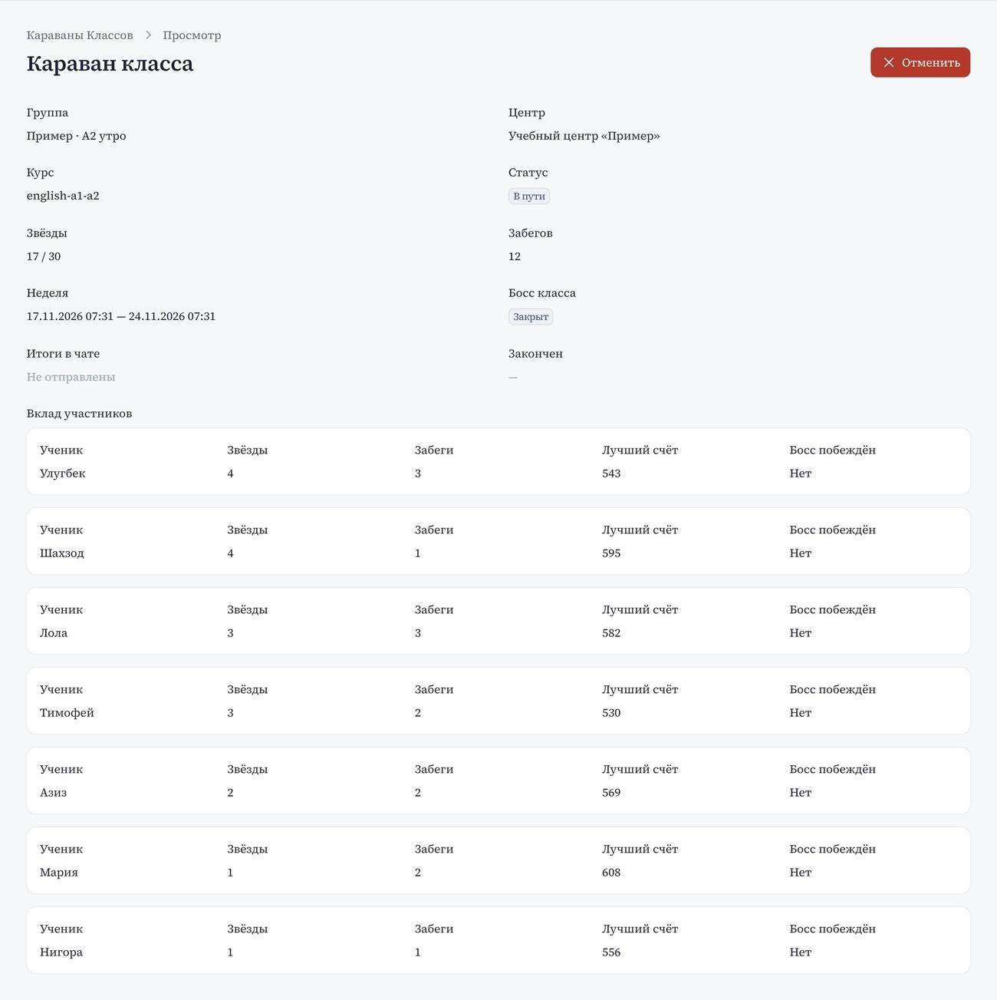
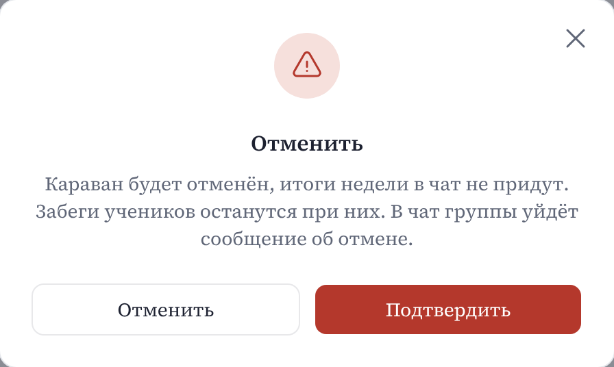
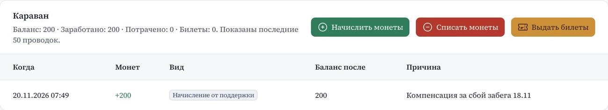
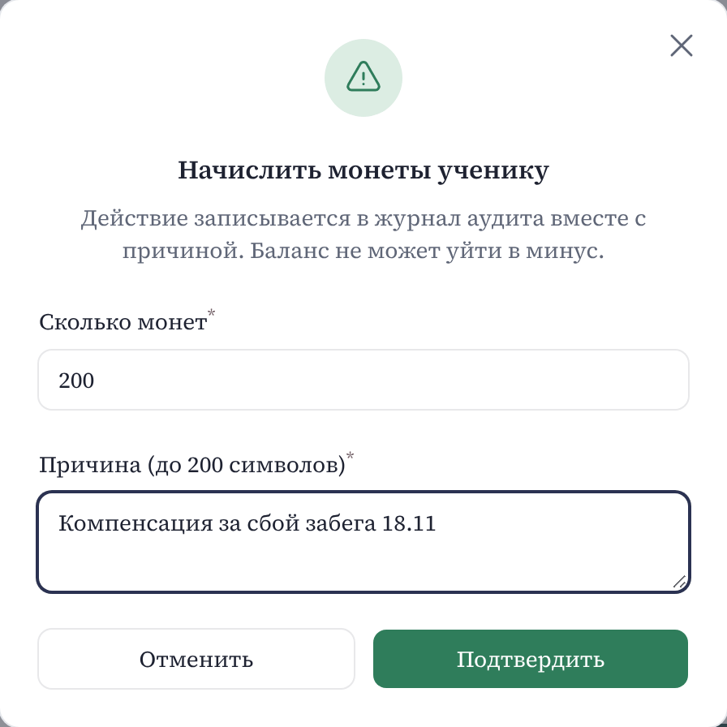

«Караван» — игра в мини-приложении: ученик проходит «стоянки» с заданиями по словам, зарабатывает монеты и звёзды, покупает в лавке косметику и бустеры. Класс может идти «караваном класса» неделю вместе. Группа меню Караван — только для администратора: каталог лавки, журнал забегов и караваны классов. Монеты конкретного ученика — во вкладке «Караван» его карточки.
Раздел Караван → Предметы. Два вида предметов: косметика (слот: верблюд, ковёр, шатёр, рамка) и бустеры (эффект: подсказка, лишняя фляга, второй шанс).

Фильтры: вид, статус, доступность. В строке — Опубликовать (у черновика) или В архив (у опубликованного) и Изменить.
| Поле | Правила |
|---|---|
| Ключ | строчные латинские буквы, цифры и «_», до 48 символов; задаётся при создании и потом не меняется |
| Вид, Слот, Эффект | косметике нужен слот, бустеру — эффект |
| Цена, монет | 0 — не продаётся (выдаётся за достижение или всем по умолчанию) |
| Доступность | «Базовый», «За достижение» (тогда выберите достижение), «Сезонный», «Эксклюзив (Pro)» |
| Порядок | место в лавке |
| Название (ru), Название (uz); описания | названия обязательны |
| Картинка | имя картинки из списка мини-приложения, не ссылка |

Косметика с доступностью «Базовый» и ценой 0 есть у каждого ученика. Если назначить ей цену или сменить доступность, она пропадёт из гардероба у всех; после сохранения панель предупредит «Предмет больше не выдаётся всем по умолчанию».
Раздел Караван → Забеги — журнал прохождений, только для чтения. Колонки: ученик, вид (стоянка, босс, караван дня, босс класса), курс, статус, как закончился (пройден, провален, время вышло, брошен), очки, звёзды, начисленные монеты и очки лиги, сколько слов подтянуто в повторение, начало.

Фильтры: вид, статус, курс, ученик (по номеру), даты начала. Просмотр открывает забег: итоги, фляги, лучшее комбо, награды и таблица ответов (задание, действие, вердикт, с первой попытки, время). Правильные ответы задания на странице забега не показываются.

Забег пригодится, когда ученик пишет «игра не засчитала» или «пропали монеты»: здесь видно, чем закончился забег и сколько начислено.
Учитель запускает караван класса на неделю (командой бота или в кабинете центра). Ученики группы приносят звёзды; при достижении цели открывается «босс класса». В конце недели итоги уходят в чат группы. Раздел Караван → Караваны классов показывает караваны всех центров.

| Колонка | Что значит |
|---|---|
| Статус | «В пути», «Завершён», «Отменён» |
| Звёзды | собрано / цель |
| Неделя | начало и конец каравана |
| Босс класса | «Закрыт», «Открыт», «Побеждён» |
| Итоги в чате | когда итоги ушли в чат; пусто — ещё не отправлены или не отправлялись, потому что группа неактивна |
Просмотр показывает вклад участников (только имена): звёзды, забеги, лучший счёт, победил ли босса.

Кнопка Отменить — в строке идущего каравана и на его странице.

Отмена необратима: караван останавливается, итоги недели в чат не придут, в чат группы уйдёт сообщение «Караван класса отменён». Забеги учеников остаются при них.
Откройте Ученики → ученик → вкладка Караван. Вверху — баланс, заработано, потрачено, билеты; ниже — последние 50 проводок с причинами.


Списание никогда не уводит баланс в минус: если монет не хватает, панель ответит «У ученика N монет, а списать нужно M…» и ничего не спишет. Выдать билеты принимает число от −100 до 100 (без нуля): положительное выдаёт, отрицательное забирает. На счёте не больше 10 билетов — лишние не поместятся, и панель скажет, сколько не влезло.